Eune Touônnée en Lorries

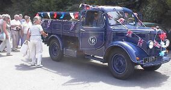
Sanm'di lé 30 dé Juîn 2001, des membres dé L'Assembliée d'Jèrriais lus rêunnîtent au Creux du Vis pouor aller faithe eune touônnée en lorries l'tou d'l'Île.
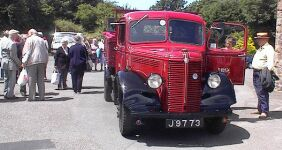
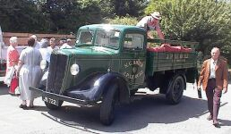
Coumme nou vait, les vièrs ouadgîns sont vraînment bieaux sustout auve les couleurs et les ballons.
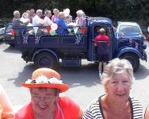
I' faîsait un temps supèrbe. Lé solé lithait, mais y'avait eune p'tite brise.
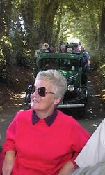
En pâssant par St. Louothains - nou vait l'églyise, et y'a tréjous un tas d'flieurs à la Salle Parouaîssiale.
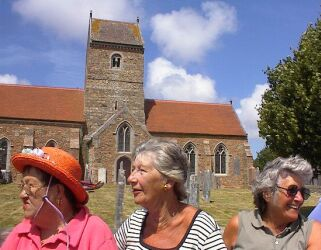
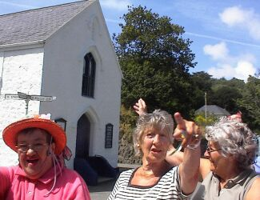
|
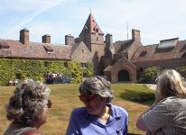
|
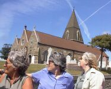
|
|
En pâssant par l'Mangni d'St. Ouën.
|
L'Églyise dé St. Ouën
|
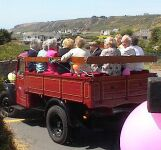
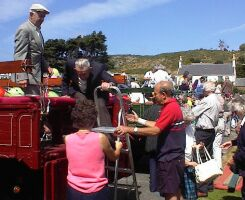
En prannant not' thée ès Goldsmiths à la Grande Route des Mielles.
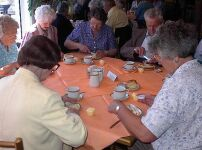
St. Brélade - deux-trais des ouadgîns fûtent édgéthés au Par des Creux. Mais les membres chantaient des chansons en attendant.
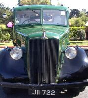
En pâssant par la Baie d'St. Brélade.
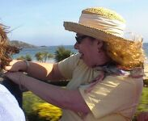
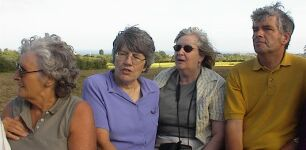
D'èrtou au Creux du Vis pouor not' souper.
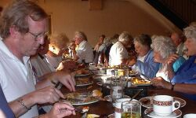
Viyiz étout: